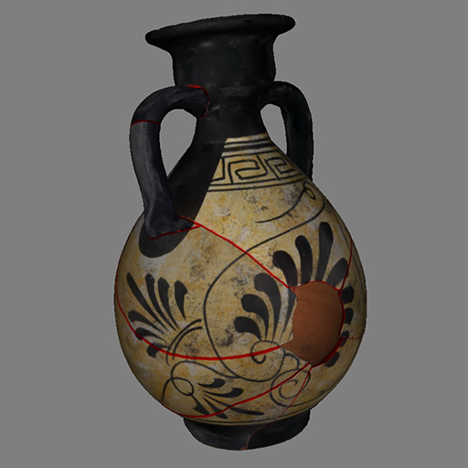
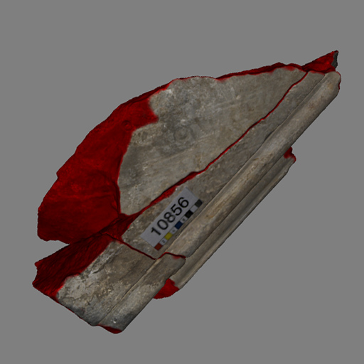

Labeled Fractured Objects Repository
This site provides an extensible collection of digitized fractured objects, accompanied by grey-scale label mask textures that store a confidence value for the underlying part of the geometry belonging to a fractured surface.
Format
Why Label Textures?
How to Cite the Repository
Extending the Repository
Small vessel replica

A 10-piece dataset of a broken vessel replica digitized by Ploutarchos Iliadis, as part of his MSc thesis in Digital Methods for the Humanities, AUEB (2025).
Masonry block

A 3-piece dataset of an incomplete broken soapstone block from the Nidaros Cathedral in Trondheim, Norway (2014).